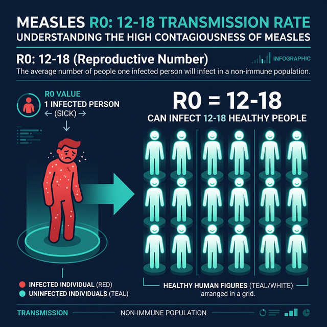
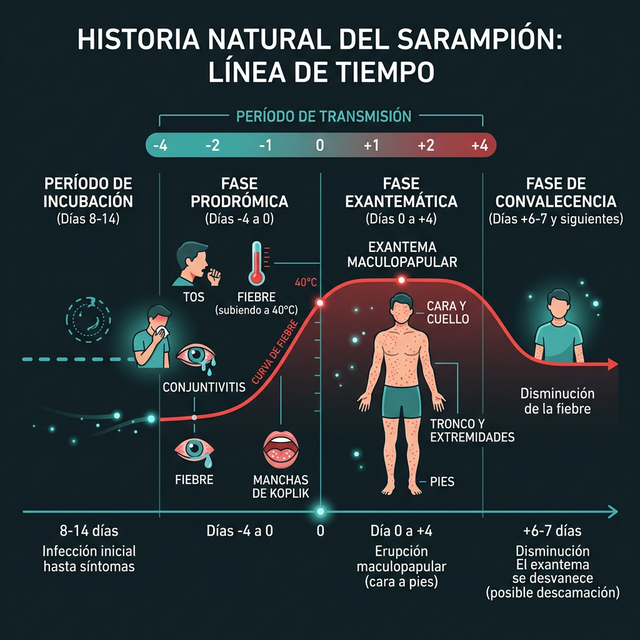
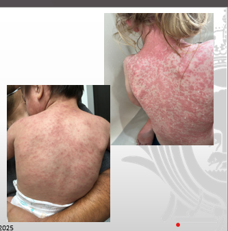
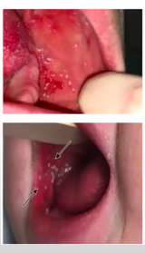

El sarampión era una constante con picos cada 2 años. El 45% de los casos ocurrían en menores de 2 años.
La epidemia más grave registrada. Mortalidad de 21.9 por 100k. Detonó la vacunación masiva.
Se mantenía una cobertura de vacunación menor al 50%.
Limitada a poblaciones con >1500 habitantes.
El 24% de la población rural no tenía acceso a la vacuna, facilitando una nueva epidemia en América.
La epidemia se vio favorecida por la migración masiva de población rural a zonas urbanas, concentrando personas susceptibles sin cobertura vacunal.
• 89,163 casos confirmados
• 8,150 defunciones registradas
~10% de letalidadMéxico fue declarado libre de transmisión endémica de sarampión en 1996, tras la gran epidemia de 1989–1990 y gracias al fortalecimiento del Programa de Vacunación Universal con altas coberturas de SR y SRP, más vigilancia epidemiológica intensiva.
En 2016, la OMS y la OPS certificaron a toda la Región de las Américas — incluyendo a México — como libre de sarampión endémico, un hito histórico en salud pública continental.
"Este logro fue posible gracias a coberturas sostenidas >95% y sistemas de vigilancia epidemiológica robustos."
Paramixovirus
Morbillivirus
Mundial
Humanos (exclusivo)
Tras la exposición, ~90% de personas susceptibles desarrollarán sarampión. Transmisión por gotas, aerosoles y fómites (hasta 2 horas en el aire).

Naureckas C, Kaplan S, Edwards J, et al. Pediatrics. 2025. Moss W.

8–14 días (7–21)
2-4 días. Fiebre 40°C, tos, conjuntivitis, coriza. Koplik 48h antes
Exantema maculopapular cefalocaudal. Persiste fiebre 2-3 días.
+6-7 días. Descamación fina. Complicaciones (ej. PEES años después).
Naureckas C, Kaplan S, et al. Pediatrics. 2025.
📋 CASO SOSPECHOSO:
Toda persona que presente fiebre + exantema maculopapular
generalizado y al menos uno de los siguientes:

Naureckas C, Kaplan S, et al. Pediatrics. 2025.
Pequeñas petequias en paladar blando. Más clásicas en rubéola, pero pueden verse en sarampión.

Naureckas C, Kaplan S, et al. Pediatrics. 2025.
Ocurre en pacientes con inmunidad parcial (vacunados previamente que perdieron anticuerpos, o lactantes con anticuerpos maternos residuales).
Histórico. Se observaba en personas que recibieron la vacuna de virus muertos (inactivados) entre 1963 y 1967 y posteriormente se expusieron al virus salvaje.
Presentación fulminante, típicamente en pacientes con inmunodeficiencia celular (ej. VIH avanzado, leucemia, desnutrición severa).
Especialmente aquellos con deficiencia severa de Vitamina A.
Alto riesgo de complicaciones maternas severas y pérdida fetal.
Poblaciones en zonas de hacinamiento clínico o campos agrícolas.
| Complicación Clínica | Incidencia |
|---|---|
| 🤎 Diarrea | 1/12 |
| 👂 Otitis media | 1/14 |
| 🫁 Neumonía Fatal | 1/20 |
| ⚡ Crisis convulsivas | 6-7/1000 |
| 🧠 Encefalitis | 1-3/1000 |
| 📉 Encefalomielitis posinfecciosa | 1/1000 |
| 💀 Panencefalitis esclerosante subaguda | 4-11/100 000 |
| Enfermedad | Hallazgos clínicos | Características del exantema | Laboratorio | Puntos clave para diferenciar |
|---|---|---|---|---|
| 🔴 Sarampión | Fiebre alta (>38.5°C), tos, coriza, conjuntivitis, manchas de Koplik | Maculopapular, inicia retroauricular y línea capilar, progresa cefalocaudal, confluente | IgM sarampión +, PCR+, leucopenia | Triada clásica + Koplik. Fiebre persiste tras el exantema |
| Rubéola | Fiebre baja, adenopatías retroauriculares y suboccipitales | Maculopapular fino, rosado, no confluente, inicio facial, duración 3 días | IgM rubéola + | Adenopatías prominentes, cuadro más leve, exantema no confluente |
| Exantema
súbito (Roséola) |
Fiebre alta súbita 3–5 días; al desaparecer aparece el exantema | Máculo-papular rosado, inicia en tronco, no confluente | Leucocitos normales o linfocitosis | Exantema aparece cuando cede la fiebre |
| Eritema
infeccioso (Parvovirus B19) |
Fiebre leve, artralgias | "Mejillas abofeteadas", luego patrón reticular en extremidades | IgM Parvovirus B19 | Exantema reticulado típico, sin fase catarral intensa |
| Escarlatina | Fiebre, odinofagia, lengua en fresa, faringitis | Puntiforme, áspero al tacto (tipo lija), pliegues de Pastia | Exudado faríngeo + S. pyogenes | Asociado a faringitis bacteriana |
| Dengue | Fiebre alta, mialgias intensas, cefalea retroocular | Macular o petequial, islas blancas en mar rojo | NS1, IgM dengue, trombocitopenia | Dolor intenso + datos de fuga capilar |
| Varicela | Fiebre moderada, malestar | Lesiones en distintas etapas: mácula–pápula–vesícula–costra | Diagnóstico clínico, PCR VZV | Lesiones vesiculares pruriginosas en distintos estadios |
Verificar criterios: fiebre + exantema maculopapular + tos / coriza / conjuntivitis.
Notificación inmediata al nivel jurisdiccional, toma de muestras serológicas/virológicas y elaboración de lista de contactos.
Mascarilla quirúrgica al paciente y acompañantes. Aislamiento en domicilio durante período de transmisión.
Definir según criterios clínicos y factores de riesgo (edad, comorbilidades, estado nutricional, acceso).
Garantizar ventilación adecuada del espacio utilizado. El consultorio o área de atención no debe ser utilizado(a) por lo menos 2 horas tras la atención del caso, para eliminar partículas virales en suspensión.
Fuente: PVU, 2026
| Contraindicaciones | Precauciones |
|---|---|
| Reacción alérgica grave (anafilaxia) a dosis previa o componente | Infección leve |
| Fiebre mayor de 38°C | Alergia al huevo |
| Embarazo | Recepción reciente (≤11 meses) de productos sanguíneos con anticuerpos |
| Trombocitopenia (contraindicación relativa) | Antecedentes de trombocitopenia o púrpura trombocitopénica |
| Transfusión (inmunoglobulina, sangre total) | Enfermedad aguda moderada o grave |
| Inmunodeficiencia grave conocida (VIH avanzado, quimioterapia, inmunosupresión a largo plazo) |
Fuente: CDC — Contraindications and Precautions
Mensajes clave para la práctica clínica
Fiebre alta + exantema cefalocaudal + triada (tos, coriza, conjuntivitis) = sarampión hasta no probar lo contrario.
No esperes confirmación de laboratorio. Toda sospecha se notifica de forma urgente al nivel jurisdiccional.
Mascarilla al paciente y contactos. Consultorio sin uso al menos 2 horas tras la atención.
2 dosis de SRP/SR protegen >97%. En brote, no esperar: vacunar de inmediato a susceptibles.
Suero para IgM + hisopado nasofaríngeo para PCR. Lista de contactos lista antes de que el paciente salga.
La eliminación se mantiene con coberturas altas y sostenidas. Cada dosis aplicada cuenta.
"La vigilancia epidemiológica activa y la vacunación sostenida son nuestra primera y más poderosa línea de defensa."